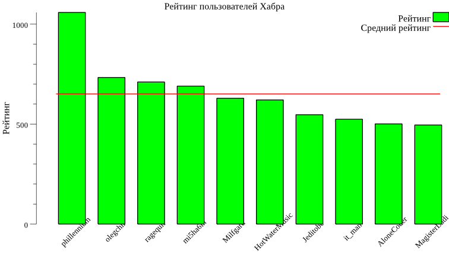
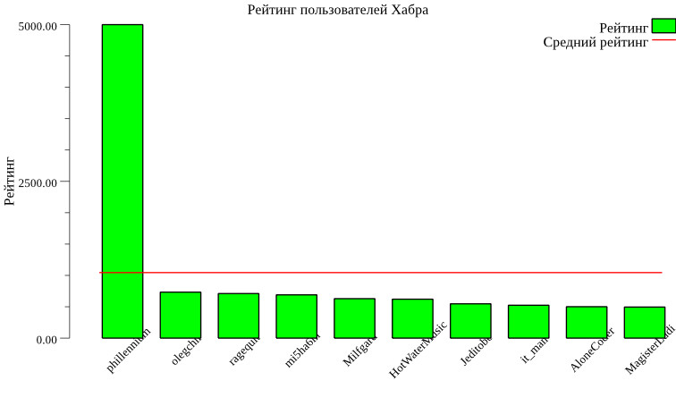

Статья носит познавательно-развлекательный характер, код лучше не использовать в проде. Я решил её написать, во-первых, потому что так и не нашёл аналогичных русскоязычных материалов, а во-вторых – потому что мне нравится Go и аналитика. Такие дела.
Что подразумевается под анализом данных в этой статье? Прежде всего поиск закономерностей и соотношений в числовых наборах данных. Например, нахождение зависимости между временем публикации поста в блоге и числом просмотров. Или процент нецензурных слов в твите и количество его ретвитов.
Основные сущности, с которыми мы будем работать – это вектор и матрица. Для Go существуют несколько быстрых библиотек линейной алгебры (TODO: вставить примеры). Мы же будем изобретать свой велосипед из педагогических соображений.
Вектор – это упорядоченный набор чисел. Основными операциями над вектором являются сложение с другим вектором, умножение на вектор и на число, вычисление нормы.
Определим кастомынй тип вектора. Такой подход с созданием типа-псевдонима позволит нам использовать цепочки вызовов методов вместо глубоко вложенных вызовов функций.
type Vector []float64
Для начал напишем базовые утилиты, они сильно упростят нам жизнь в будущем MakeVec, Len, New и Copy:
TODO: добавить спойлер
// Удобная функция для конструирования векторов из других коллекций
func MakeVec(len int, source func(i int) float64) Vector {
var vector = make(Vector, 0, len)
for i := 0; i < len; i++ {
vector = append(vector, source(i))
}
return vector
}
// Опять же, дело вкуса, но мне удобнее использовать вызов метода чем функциию
func (vector Vector) Len() int {
return len(vector)
}
// Фабрика, возвращающая преаллоцированный вектор с ёмкостью равной длине оригинального вектора.
// TODO: добавить ссылку на страницу документации по слайсам
func (vector Vector) New() Vector {
return make(Vector, 0, len(vector))
}
// Копирование вектора, очевидно
func (vector Vector) Copy() Vector {
return append(vector.New(), vector...)
}
// Применение функции на весь вектор
func (vector Vector) Map(op func(x float64) float64) Vector {
var result = vector.New()
for _, x := range vector {
result = append(result, op(x))
}
return result
}
Фух, теперь займёмся непосредственно математикой. Замечу, что сейчас дальше будет реализация операций не самым эффективным, но довольно наглядным способом:
TODO: добавить спойлер
Сложение двух векторов
func (vector Vector) AddVector(xx Vector) Vector {
if vector.Len() != xx.Len() {
panic("[Vector.AddVector] expects vectors with equal lengths")
}
var result = vector.Copy()
for i, x := range xx {
result[i] += x
}
return result
}
Пребавить число к каждому элементу вектора
func (vector Vector) AddScalar(k float64) Vector {
var result = vector.Copy()
for i := range vector {
result[i] += k
}
return result
}
Поэлементное умножение двух векторов
func (vector Vector) MulVector(xx Vector) Vector {
if vector.Len() != xx.Len() {
panic("[Vector.MulVector] expects vectors with equal lengths")
}
var result = vector.Copy()
for i, x := range xx {
result[i] *= x
}
return result
}
Поэлементное умножение вектора на число
func (vector Vector) MulScalar(k float64) Vector {
var result = vector.Copy()
for i := range vector {
result[i] *= k
}
return result
}
Скалярное произведение двух векторов
func (vector Vector) MulDot(another Vector) float64 {
if vector.Len() != another.Len() {
panic("[Vector.MulDot] expect vectors with equal lengths")
}
var result float64
for i, x := range another {
result += vector[i] * x
}
return result
}
Нхождение суммы всех элементов вектора
func (vector Vector) Sum() float64 {
var accum float64
for _, x := range vector {
accum += x
}
return accum
}
Теперь когда у нас есть минимальный набор инструментов векторной алгебры, можно перейти непосредственно с анализу данных.
Самый простой способ как-то описать набор чисел – это посчитать их среднее. Среднее – это сумма элементов вектора, делённая на их количество. Реализовать этот метод просто:
func (vector Vector) Mean() float64 {
return vector.Sum() / float64(vector.Len())
}
Возьмём какой-нибудь набор данных, например – рейтинги топ10 пользователей Хабра (07.08.2018).
| Пользователь | Рейтинг |
|---|---|
| phillennium | 1058.6 |
| olegchir | 733.0 |
| ragequit | 710.7 |
| mi5ha6in | 689.9 |
| Milfgard | 629.2 |
| HotWaterMusic | 620.9 |
| Jeditobe | 546.9 |
| it_man | 524.3 |
| AloneCoder | 500.9 |
| MagisterLudi | 495.4 |
var raitings = Vector{
1058.6,
733.0,
710.7,
689.9,
629.2,
620.9,
546.9,
524.3,
500.9,
495.4,
}
fmt.Println(raitings.Mean())
// -> 650.9799999999999
Похоже на правду :3

Среднее неплохо описывает наборы значений, элементы которых мало отличаются друг от друга. Любой сильный выборс может сильно исказить повлиять на значение среднего.
Смоделируем ситуацию, при которой один из пользователей накрутил рейтинг. В качестве такого значения возьмём 2000. Посчитаем новое значение среднего:
var raitings = Vector{
5000,
733.0,
710.7,
689.9,
629.2,
620.9,
546.9,
524.3,
500.9,
495.4,
}
var mean = raitings.Mean()
fmt.Println(raitings.Mean())
// -> 745.1

Видно, что полученное значение плохо характеризует весь набор данных:
большая все значения от него сильно отклоняются,
причём направления отклонения распределены сильно несимметрично.
Как в поговорке: ты ешь мясо, я ем капусту, а в среднем мы едим голубцы.